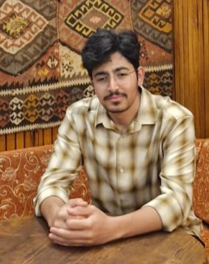
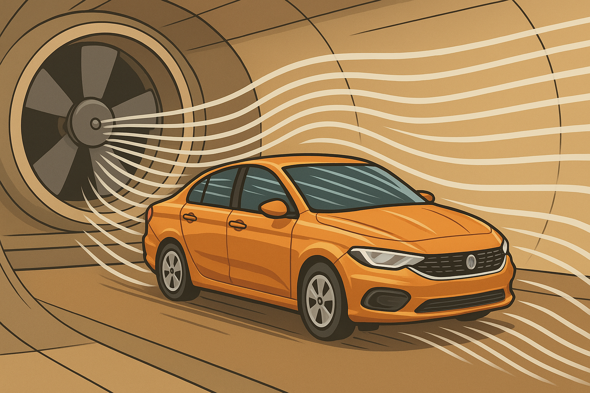

Ben Kimim?
🚀 Makine Mühendisi | Yapısal Analiz Uzmanı | Fikirlerin Anahtarı
Merhaba, ben Ernail – mekanik evrenin şifrelerini çözen, cıvataların sırdaşı, yapısal analizlerin kaşifi bir makine mühendisiyim.
CAD ekranı benim tuvalim, ANSYS ve CFD benim fırçalarım. Hesaplamalı mühendisliğe şiir gibi yaklaşırım; FEM mi dedin? Onu hem öğretirim hem çözerim, hem de sabaha kadar tartışırım.
🔧 Ne Yaparım?
- Yapısal Analiz (FEA/FEM): Karmaşık yapıları çözümlerim, stres altında kırılan sistemleri daha doğmadan yakalarım.
- Akışkanlar Dinamiği (CFD): Parçaların arasından geçen havanın bile karakterini bilirim. Vortex mi dönüyor? Ben onu koddan hissederim.
- Danışmanlık & Eğitmenlik: Bilgimi paylaşmayı severim. Gerçek mühendislik sadece bilmek değil, anlatabilmektir.
- Sıfırdan Sistem Tasarımı: 24 litrelik mini buzdolabından, teleskopik iniş takımlarına kadar uçuk-kaçık her şeyi çizer, analiz eder, üretilebilir hale getiririm.
💻 Araçlarım
ANSYS, SolidWorks, FLUENT, Simcenter, ABAQUS
Python & MATLAB ile mühendislik hesapları
3D yazıcılar ve prototipleme sistemleriyle sahada test
😎 Nasıl Biriyim?
Eski usul hesap makinesini hâlâ masasında tutanlardanım ama gözüm hep ileri teknolojide. Problem gördüğümde "kim çözer?" demem, sadece "hangi yöntemle çözerim?" derim.
Karmaşık bir FEM sonucu mu var? Kahvemi alırım, eğrileri düzleştiririm.
Eğitmenlikte sıkmam, tek derdim: "Anlayan değil, anlayan ve uygulayan mühendis yetişsin."
🌪 Hedefim?
Mühendislikte “böyle gelmiş böyle gider”e meydan okumak. Hesapların hakkını veren, çizimlerin ruhunu anlayan, sistemleri sadece çözen değil, sorgulayan ve geliştiren bir mühendis olmak.
Ve... bu yolda yalnız değilim. Öğreten, öğrenen ve birlikte büyüyen bir topluluk oluşturuyorum.
Projeler
- Drone CFD Simülasyonu:| Ansys Fluent ile aerodinamik analiz |
- İniş Takımı Analizi: | 1800 kg’lık hava aracı için iniş takımı hesapları |
- Otel Rüzgar Akış Analizi: | Çevresel CFD değerlendirmesi |
- Diş İmplantı Analizi: | Açılı abutment'larda gerilme dağılımları |
- Diş Teli Yer Değiştirme Analizi: | Maksiller dişler için yapısal analiz |
Mini Rüzgar Tüneli Tasarımı
|Hot Wheels arabaları için görsel dumanla akış davranışını inceleyen küçük ölçekli bir rüzgar tüneli tasarımı yapıldı.|
Eğitim
- İstanbul Üniversitesi - Cerrahpaşa, Makine Mühendisliği (Lisans)
- İstanbul Üniversitesi - Cerrahpaşa, Makine Mühendisliği Anabilim Dalı (Yüksek Lisans)
Teknik Alanlar: Yapısal analiz (FEA/FEM), Akışkanlar mekaniği (CFD), Ansys, SolidWorks, OpenFOAM, Abaqus
İlgi Alanları: 3D yazıcılar, drone sistemleri, fotoğrafçılık, yapay zekâ, savunma sanayi, turbojet motor tasarımı
CV'yi İndir (PDF)İletişim
E-posta: ernail.hakkoymaz@gmail.com
LinkedIn: LinkedIn Profilim